The goal of this project was to develop a flexible volumetric cloud shader in Unreal Engine.
The system is designed to support both small, localized effects and large-scale cloud formations, while
remaining performant enough for real-time gameplay scenarios.
An additional requirement was portability.
The shader is implemented primarily using custom HLSL nodes rather than Unreal-specific volumetric features,
making it easier to adapt the solution to other engines or rendering pipelines.
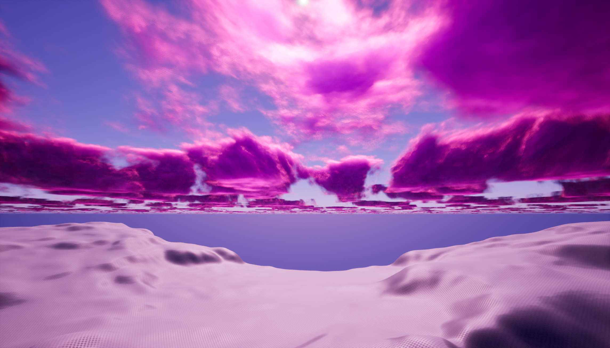

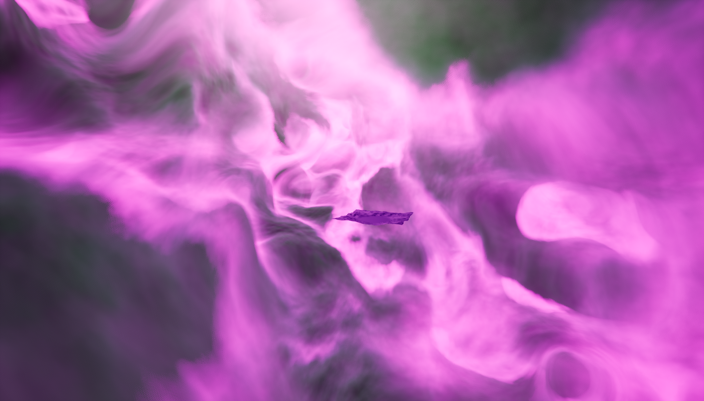
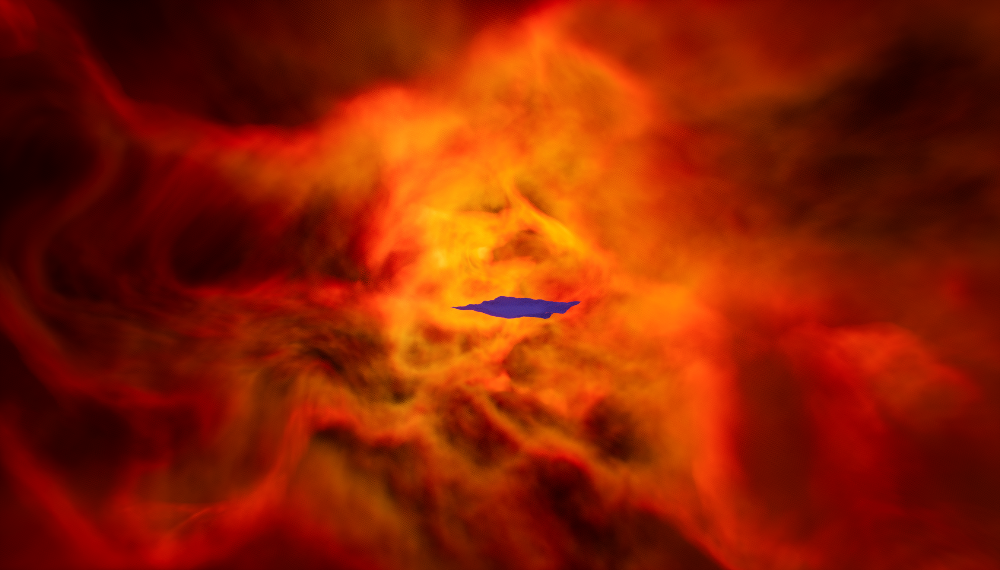
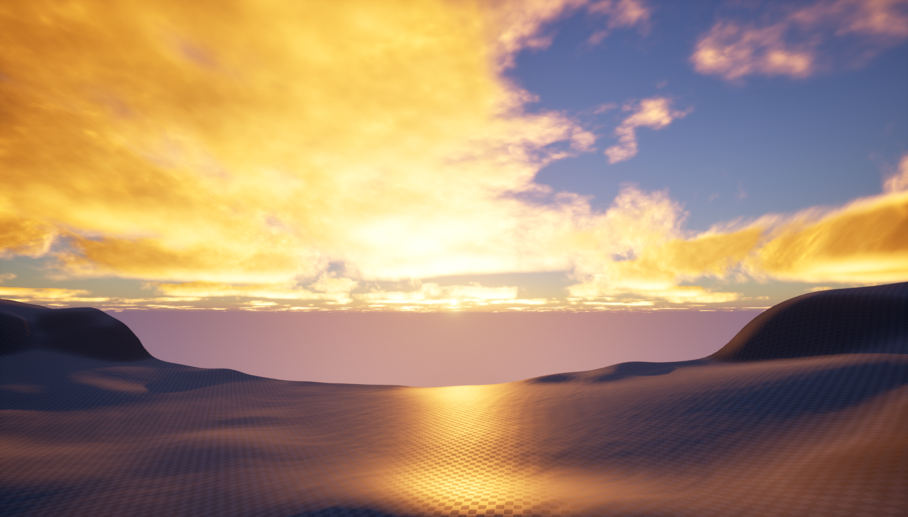
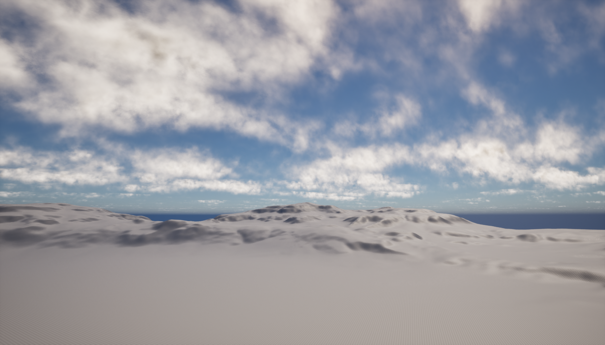
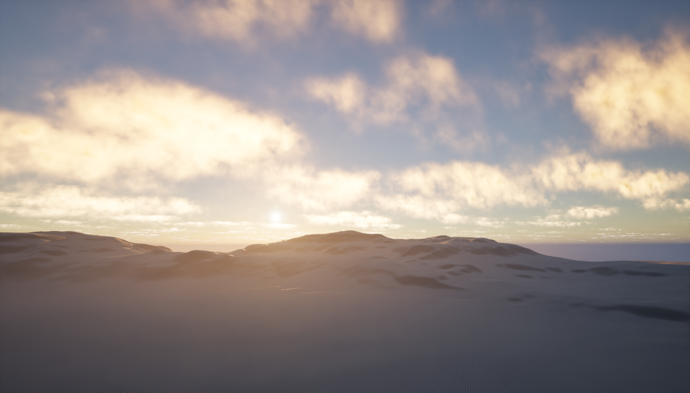
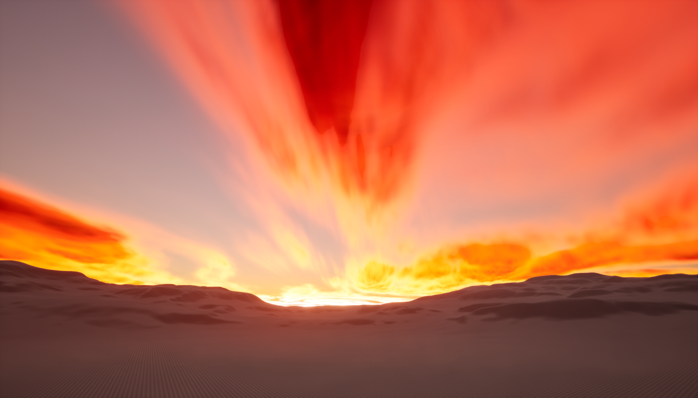
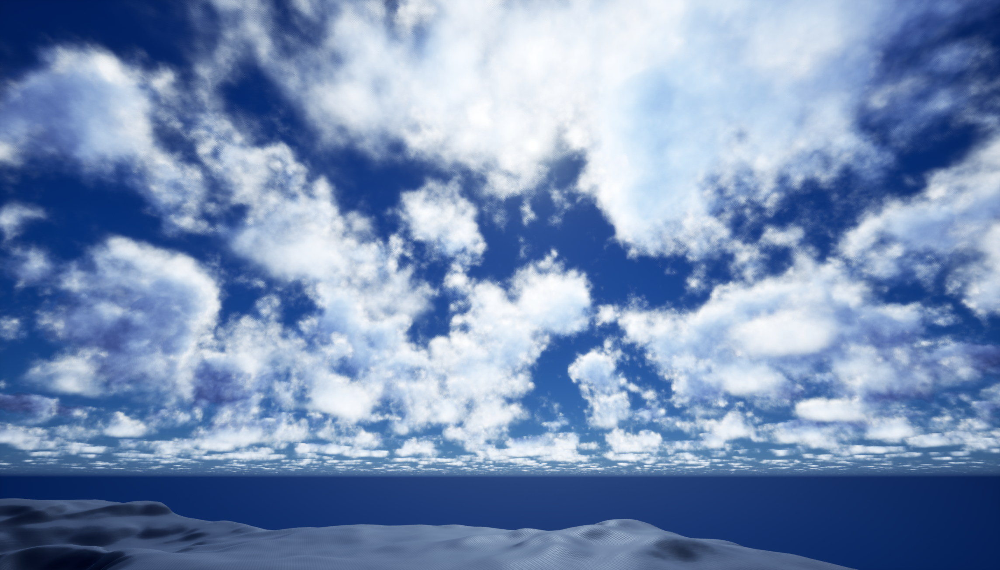
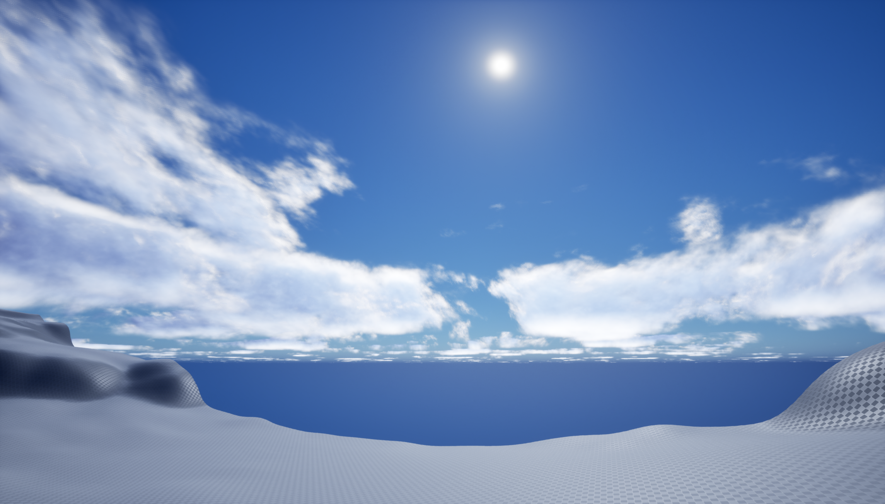
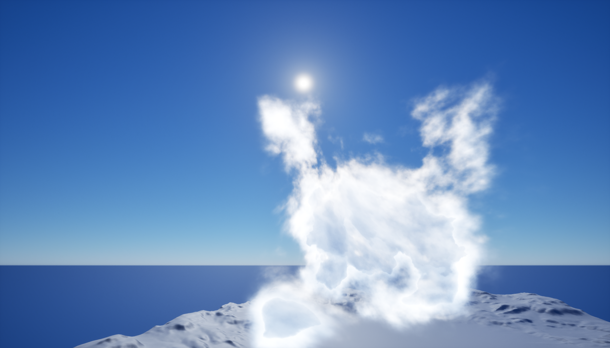
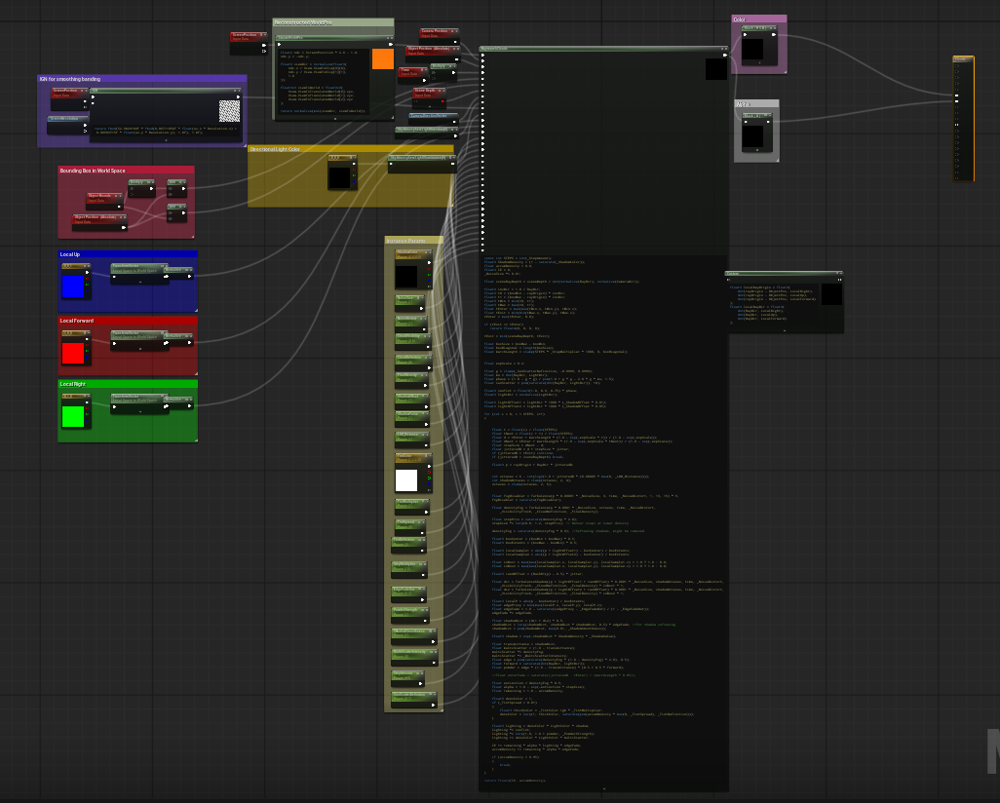
Specifications:
- Engine: Unreal Engine 5.6.1
- Material Domain: Surface
- Blending Mode: Premultiplied Alpha / Translucent / Additive
- Shading: Unlit
The cloud system is built around a single master material that contains all functionality.
From this, multiple material instances can be created, allowing users to quickly iterate on different cloud
types through parameter adjustments.
The shader operates on standard geometry and works best when applied to front-face culled boxes, which define
the bounds of the volumetric region.
These volumes can be freely translated, rotated, and scaled, and multiple instances can overlap to create more
complex cloud formations.
Lighting and color are influenced both by scene lighting—primarily the DirectionalLight—and by
artist-controlled parameters exposed in the material instance.
This enables a wide range of visual styles, from soft atmospheric clouds to more dramatic, high-contrast
formations.
Shape & Structure: Controls the overall form and detail of the clouds, including noise scale,
distortion, visibility threshold, and definition.
NoiseSize, NoiseDistort, CloudVisibility, CloudDefinition
Lighting & Color: Adjusts shadowing, tinting, and internal color variation within the volume.
ShadowValue, ShadowOffset, ShadowColor, TintColor, TintSpread, TintMultiplier, TintDefinition
Performance & Quality: Balances visual fidelity against runtime cost through step count,
sampling distance, and level-of-detail behavior.
RaymarchSteps, StepSizeMultiplier, LOD_Distance, EdgeFadeOut
At each step, a procedural noise function is evaluated to determine local density. This density is integrated along the ray using a Beer-Lambert formulation, allowing the volume to accumulate opacity in a physically accurate way. Early termination is applied once the accumulated density reaches a threshold, improving performance without significantly affecting visual quality.
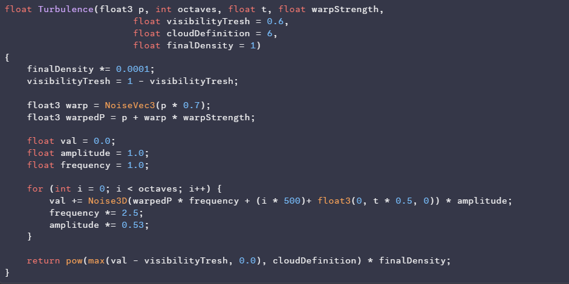
fBm function used to create multi-layered noises
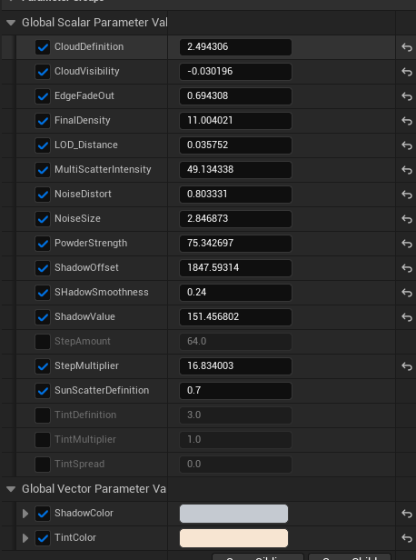
Initially, each step for density accumulation was additionally executing steps towards light direction to
accumulate shadows.
This was later replaced with a more efficient approximation based on a directional derivative,
which estimates light attenuation using a small number of offset samples along the light direction.
This significantly reduces cost (instead of 6 fBm samples per step, it's 2 with current set-up) while preserving
soft shadowing within the cloud.
Lighting is composed of multiple components. Direct lighting is driven by the scene's DirectionalLight,
modulated by shadowing and a Henyey-Greenstein phase
function to simulate anisotropic scattering.
A secondary multiple-scattering approximation adds soft ambient light within dense regions, reducing contrast
and improving perceived volume.
To make the shader usable, optimization played an important role.
The first—and likely most important—optimization was the implementation of early exits.
Ray marching stops early whenever the accumulated density reaches a value of 0.95.
In large volumes, this means that only a small percentage of the steps are used before the function stops
accumulating.
The second optimization was the implementation of an adjustable LOD system. Since the visual quality of the
clouds heavily depends on the number of octaves used, increasing the octave count results in more detailed
clouds.
However, maintaining a high number of octaves over large distances is both expensive and unnecessary, as distant
clouds naturally appear less detailed.
Instead of using a static octave value for density and shadow calculations, the octave count is dynamically
adjusted based on the distance from the camera, using a configurable parameter.
Third optimization was a simple but effective, in some cases, depth-based early exit.
This allows skipping raymarching steps that would otherwise accumulate density and shadow values for regions
that are ultimately invisible due to occlusion by scene geometry.
1. The shader started by calculating density accumulation and performing an additional raymarch toward the light
direction to compute shadows. At this stage, only two octaves of noise were used to create the effect.
2. Next, a proper fBm function was implemented, utilizing 4-5 noise octaves for both density and shadows. During
this phase, I also experimented with directional derivatives as an alternative to raymarched shadows.
3. At this point, the clouds were getting close to the desired look. However, there were still issues with step
distribution relying on a bounding box, which resulted in significant quality loss when rendering large volumes.
4. Finally, the last refinements were made. The step distribution method was improved to better handle large
volumes, and the placeholder lighting calculations were replaced with techniques commonly used in AAA games.
Additional modifications were also introduced to soften and further enhance the shadows.
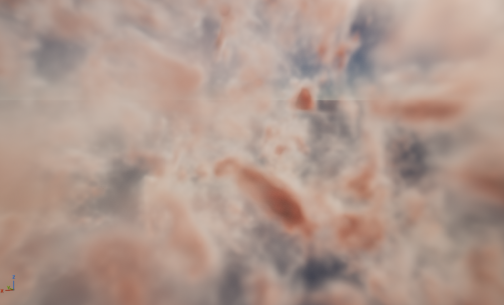
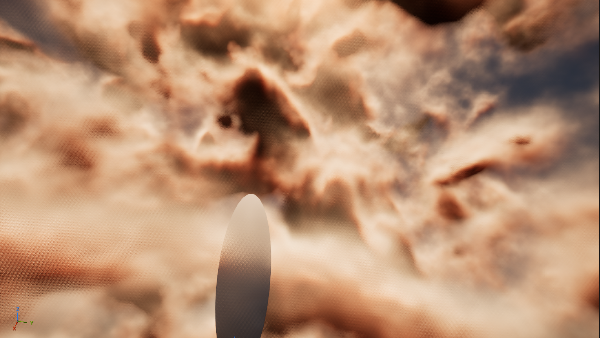
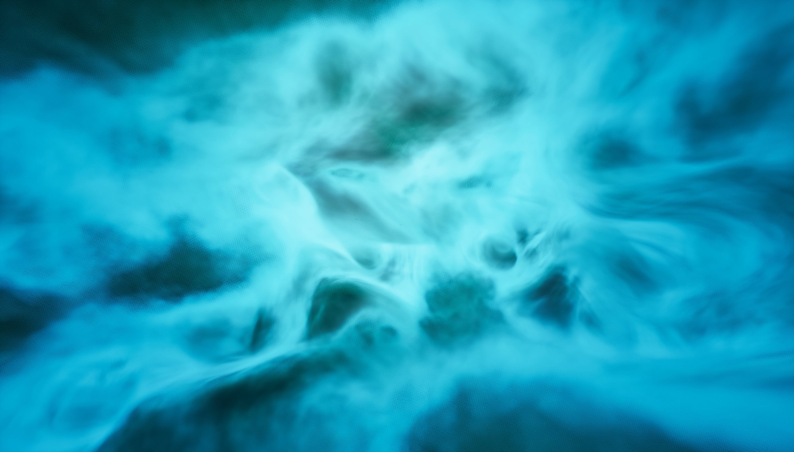